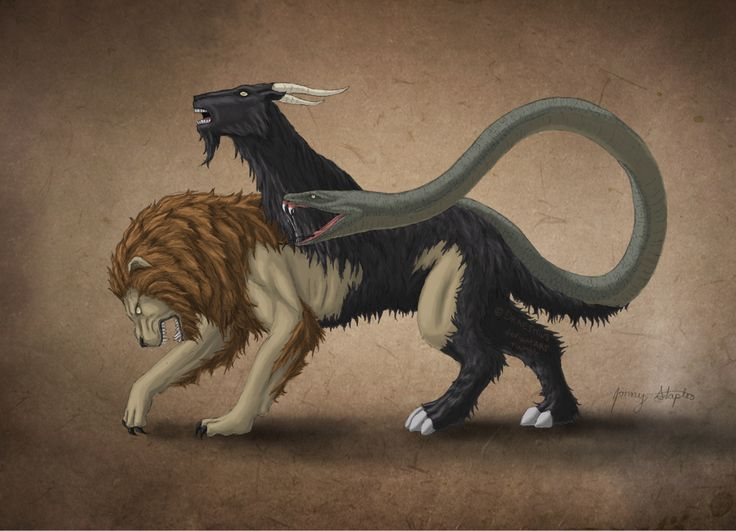
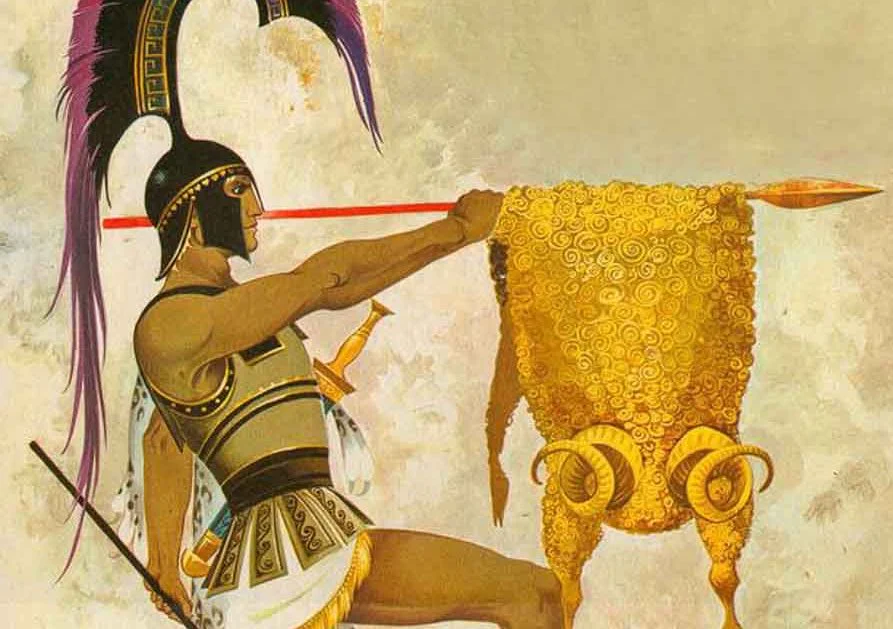
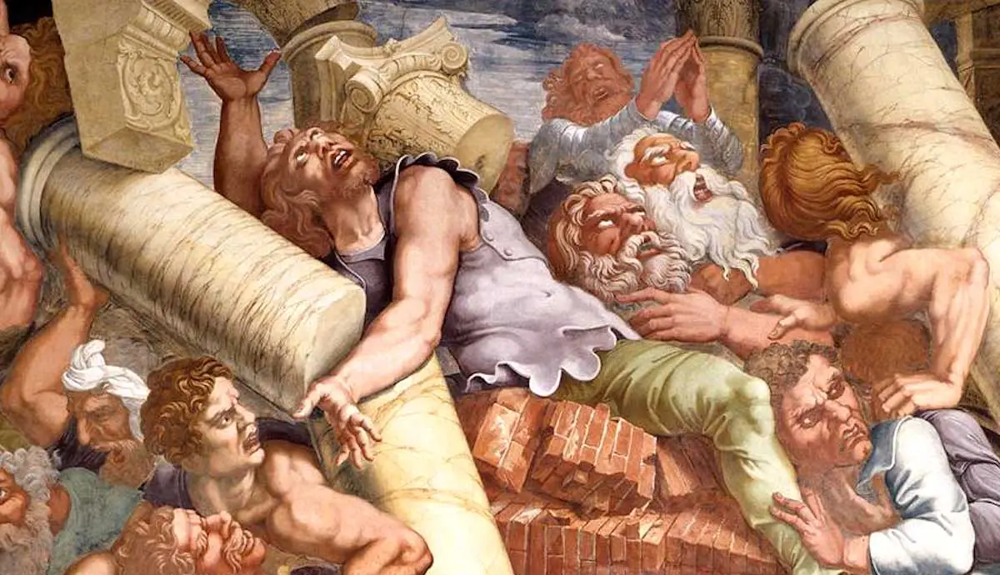
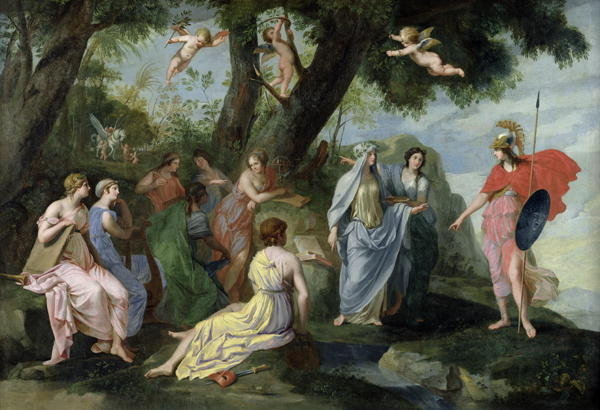
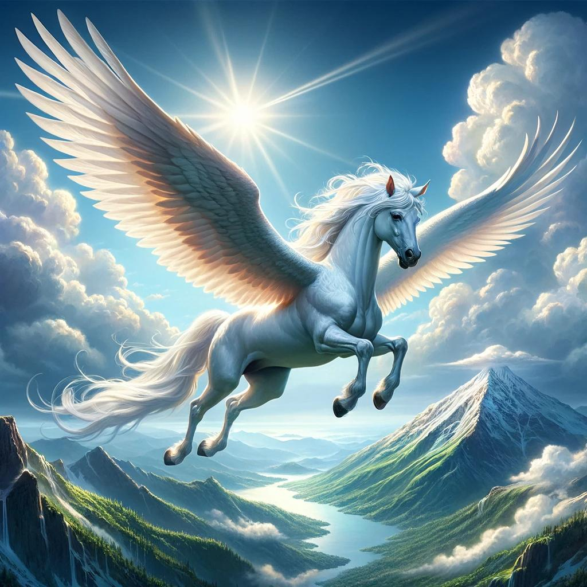

|
Myth |
Description |
Image |
|---|---|---|
|
Bellerophon and the Chimera |
The tale of Bellerophon is the most famous story involving Pegasus. Bellerophon tamed Pegasus with the help of Athena and Poseidon (familiar players from Pegasus' creation). Bellerophon rode Pegasus into battle against the monstrous Chimera, a fire breathing monster with the body of a lion, the head of a goat, and the tail of a serpent. As a team, Pegasus and Bellerophon defeated the Chimera making Bellerophon one of the legendary heros in Greek mythology. |
 |
|
The Quest of The Golden Fleece |
In Jason's epic quest with the Argonauts to retrieve the Golden Fleece, Pegasus is said to have appeared and aided Jason. While Pegasus is not a central figure in Jason's story, Pegasus is part of the broader mythological context. |
 |
|
The Gigantomachy |
During the Gigantomachy, the gigantic battle between the gods of Olympus and the Giants, Pegasus helped the gods in their fight (most likely paying tribute to the gods for Pegasus' impossible creation). Pegasus is said to have carried Zeus' thunderbolts on the battlefield allowing Zeus to unleash his mighty weapon from the skys. |
 |
|
The Birth of The Muses |
Pegasus also played a role in the birth of the Muses. The Muses are the goddesses of inspiration and the arts. Pegasus has an amazing ability that wherever his hoof strikes springs arise from the ground. Pegasus struck the ground on Mount Helicon, creating the Hippocrene Spring, a source of poetic inpiration, which led to the birth of the Muses. |
 |
|
Various Heroic Appearances |
Pegasus is often mentioned in many demi-god and hero adventures. Pegasus often represents a level of divine intervention and support from the gods. While Pegasus is not always a central figure, its appearance in these stories demonstrates Pegasus' status as a popular and powerful divine and mythical creature associated with heroic deeds and epic journeys. |
 |
Sources: https://images.google.com/